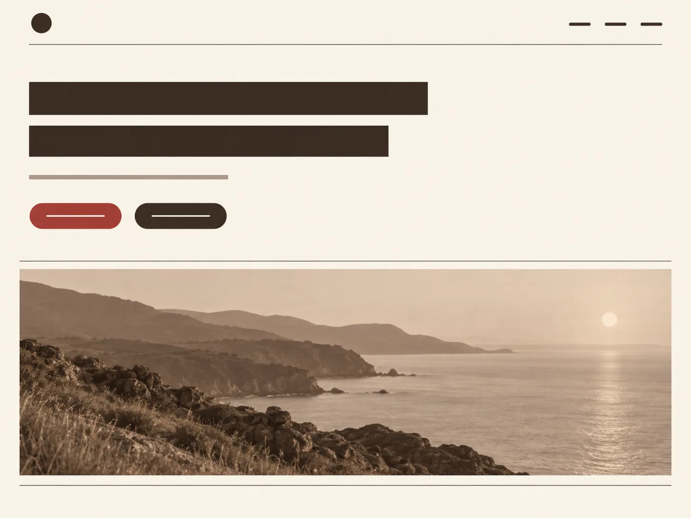

＋⤓◫

你只需要说清要什么。选工具、排步骤、完成后的自检，都由它负责。

留白多一点
做出来一件东西，它就落在画布上，有自己的位置。你可以拖动它、圈选它、让它和别的东西并排，也可以让它去取材。生成图抠完直接进页面，文档里的图直接进演示。
一轮做完，画布本身就是这一轮的成果，不必再去文件夹里翻找。
你不用记住它有哪些能力。说清楚要什么，它自己决定该生图、该抠图、该写页面，还是该跑一段代码。
工具执行后它会自行检查结果：截图、读回文件、跑一遍校验。不对就回头改，不用你盯着。
按描述出图，可指定风格，完成后直接落在画布上。
抠出透明底，作为版面元素使用，不是当作配图。
手写 HTML/CSS，不使用模板，改的是真实代码。
完成后自行截图检查版面，不对就回头修。
真 Word 文件，排版符合中文规范，对方可以继续编辑。
先确定人物与场景，再逐镜推进。
分镜拼成成片，按 EDL 排序，导出视频。
设定、性格、说话方式确定后，它会保持角色一致。
选一个场景，看它把这件事拆成几步、挑了哪些工具。
「第三段再往左一点」「这块字号收一号」，这类描述很难说清楚，直接指出来更快。在预览上圈一块，写一句，它按你的意思改。
长期记忆、项目档案、板书，三样东西叠在一起，下次开对话不用重新交代一遍。你偏好什么、这个项目定过什么、上轮讨论到哪，它自己检索。
站点整站导出 zip，单页导出为自包含 HTML；文档导出 .docx，演示导出 PDF / PPTX。要发布到公网，一条命令即可上线，地址长期有效。
交付物是纯静态文件，不绑定平台，放到哪里都能运行。